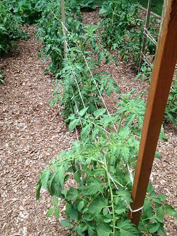

Center for Sustainable Agribusiness and Food Security
(CESAF) NGO
....Promoting Sustainable Agricultural Production
Staking

Depending on the variety of tomatoes you plant, you may need to stake the plants. Staking improves aeration and it prevents spoilage of tomato fruits. When tomato fruits touch the soil, they may get rotten.
Indeterminate tomatoes grow so tall and they set fruit till they die off. Indeterminate tomatoes can grow up to 10 feet; they are mostly planted in greenhouses and polytunnels. You have to prune indeterminate tomato plants intermittently for optimum production.
Semi-indeterminate tomatoes are similar to indeterminate tomatoes; they grow very tall too but not as tall as indeterminate tomatoes. Both indeterminate and semi-indeterminate tomatoes need staking.
Determinate tomatoes or bushy tomatoes are varieties that grow short, they do not need staking, they set their fruits within a short time and they can be harvested for a very short time.
Marketing of produce
Before planting, you must devise a way to market the fresh tomatoes when harvested. Do you want to sell in the organised market like Shoprite or hotels? Do you want to sell in the unorganised market like Mile 12 market Lagos, Aba local market or any other open roof market around you?
If you want to sell in the organised market, you must produce all year around and harvest almost every week, in this case, you need to practise succession planting. In the organised market, the price of your produce will be pre-agreed and it will be the same price over a specified period of time say 12 months. You may agree that you will sell your kilo of fresh tomatoes at N400. The advantage of this is that your cashflow can be predicted.
In the unorganised market, the prices of tomatoes are not stable, you cannot sell by weight. You will rather sell in baskets. There are several types of these cane baskets. A 60kg basket full of fresh tomatoes that can sell for N5,000 today may sell for N25,000 next month. The prices are somewhat volatile, though seasoned tomato farmers know the prices to expect at any point in time.
The timing of your harvested tomato produce is also very important especially if you are selling in the unorganised market. There are peak and off-peak tomato season in Nigeria, this trend has been established for over 50 years and it has not been broken.
There are times; tomatoes are extremely cheap and there seasons that prices of tomatoes can increase by over 200%.
Tomato Processing in Nigeria/Outgrowers’ Scheme – Opportunities for Investors
About 98% of the semi-finished tomato paste used to produce processed tomato paste in Nigeria is imported. Most tomato processing plants in Nigeria simply package imported tomato paste. Nigerian farmers do not benefit from this business.
There are very few tomato processors who use fresh tomatoes for production of their tomato paste in Nigeria. Dangote Tomato has not really started, ditto Tomato Jos. The inability to set up tomato outgrower scheme still remains the major reason why most tomato processors have not been successful.
There is still a huge opportunity for any investor who intends to produce tomato paste from fresh tomatoes in Nigeria. The Federal Government has already placed an import barrier in the form of tariff on imported tomatoes derivatives. This is a positive for any would be investor in the sector.
Setting up outgowers scheme for tomatoes will go a long way in making the processing of fresh tomatoes to paste a reality in Nigeria.
Outgrowers schemes have been very successful in maize, cassava and soybeans processing. With inputs supplied to farmers on credit, farmers will be able to increase acreage of land under cultivation.
Diseases of tomato plants
Late Blight
This is a tomato disease caused by an oomycete, it has been wrongly said that this disease is caused by a type of fungus. Oomycetes are not true fungi, they are different and the curative strategy for oomycetes is a bit different.
Late blight is caused by Phytophthora infestans. The symptoms of late blight presents as irregular brown spots on tomato fruits, the fruits may later become rotten. Tomato late blight disease is prevalent during the cool and rainy season.
Good and consistent spraying of fungicide will help in preventing and controlling this disease. You may either use organic or inorganic fungicide.
Early Blight
This disease leaves brown or black spots on the dark edges of the lower leaves of a tomato plant. The stems can also have spots. This disease mostly appears when the tomato plants start setting fruits.
Mosaic Virus
Mosaic virus is transmitted by insects and beetles. Once your tomato plants get infected, the leaves may become yellow and rough or papery in texture. Tobacco smokers can also act as an agent of transfer of this disease on your tomato farm.
To prevent this disease, you should control insects, also make sure that no tobacco user works in your farm. If you suspect that any tomato plant is affected with mosaic virus, uproot the plant and bury or burn far away from your farm.
There are several tomato varieties resistant to this disease.
Bacterial Wilt
This is a disease that starts from the soil. Once your soil is infected with the disease, if you plant a tomato variety without resistance to the disease, then your plants stand a chance of getting the disease.
The symptoms appear as a sudden wilting and death of the tomato plants. Plants may wilt in a sunny afternoon and within hours they may die. The disease affects the vascular system of the tomato plants; it prevents the passing of water and nutrients to the key parts and tissues of the tomato plant.
To know if your tomato plant has bacterial wilt, cut the stem and put the cut stem in clear water in a transparent glass cup. If a creamy or white substance oozes out of the cut stem, then you can assume that the plant is infected with bacterial wilt.
To bacterial wilt, ensure that you solarise your soil so that the organism causing the disease dies. Also, ensure that your tomato plants do not have any injury or cut that will make the disease enter the plants easily.
Some parts of Nigeria have higher incidences of bacteria wilt than others.
Tuta Absoluta
This is a type of moth that can ravage and destroy hectares of tomato farms within days. This leaf miner can lead to 100% loss of yield.
Tuta Absoluta affects the leaves and fruits. The pest makes the fruits unmarketable. There are good pesticides that can be used to prevent and tackle the disease.
Tomato Plant Disease Resistance Codes
V Verticillium wilt
F Fusarium wilt
F Fusarium wilt races 1 and 2
FFF Fusarium wilt races 1, 2, and 3
N Nematodes
A Alternaria alternata (stem canker or early blight)
T Tobacco mosaic virus
St Stemphylium (gray leaf spot)
TSWV Tomato spotted wilt virus
Do you need a Practical One on One
Fingerlings Production Training on your Farm?
Contact CESAF today!
Call: 08051676205
Contact us:
Phone: +234(80)51676205
E-mail: cesef@gmail.com